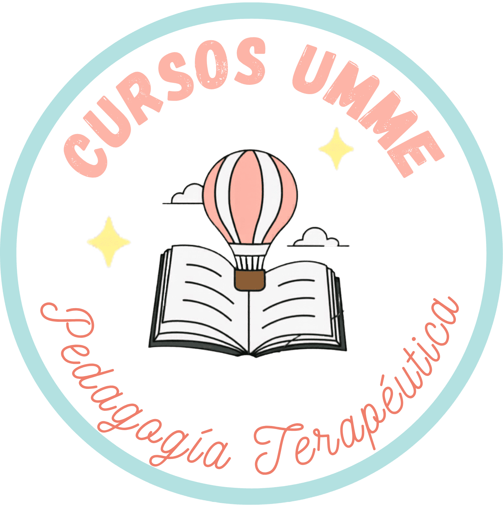

CursosUmme
Plataforma e-learning con venta, DRM
y gestión propios — en producción
Trabajo de Fin de Máster
María Sánchez Fernández · José Manuel Borrás Rodríguez
🌐 cursosumme.es
TFM
1
El problema
Vender formación online sin ceder el control
La academia Umme quería vender y servir su formación online sin depender de plataformas tipo Udemy/Hotmart, que:
- Se llevan una comisión de cada venta
- Limitan el control sobre contenido y alumnado
- No protegen el vídeo frente a descargas y piratería
Necesitaba: vender + cobrar + servir vídeo protegido + autogestionarse — todo propio.
2
La solución
Una plataforma end-to-end
1
Capta y vende
Web comercial + checkout con Stripe (IVA y datos fiscales)
2
Da de alta sola
El webhook crea la cuenta y envía las credenciales por email
3
Sirve protegido
Vídeo con DRM y marca de agua dinámica
4
Se autogestiona
Panel de administración completo para una sola persona
3
Demo
Así funciona
Recorrido del flujo real:
- Comprar un curso en la web pública
- Recibir el email con las credenciales
- Iniciar sesión y entrar al área privada
- Reproducir un vídeo protegido con marca de agua
🌐 Demo en vivo en cursosumme.es · (capturas / GIF del flujo de compra como respaldo)
4
Arquitectura
Simple por dentro, potente en las integraciones
NavegadorAstro v5 + TS
→
API PHP 8PDO · un endpoint por recurso
→
MySQLIONOS
VdoCipherDRM vídeo
Stripepagos + webhook
Sin framework de backend: cada recurso es un endpoint PHP que valida sesión, opera en MySQL y devuelve JSON. La complejidad real está en las integraciones de DRM y pagos.
5
Seguridad — el punto fuerte
Prioridad transversal
🔐 Contraseñas
bcrypt cost 12 + migración transparente desde SHA-256
🎟️ Sesiones
Por dispositivo (tabla sesiones) + rate limiting por IP
🎬 Vídeo
DRM Widevine + FairPlay y marca de agua con el email
💳 Pagos
Webhook con verificación de firma e idempotencia
➕ Cumplimiento RGPD y evidencia de desistimiento · secretos fuera del repositorio.
6
Retos técnicos resueltos
Donde estuvo la dificultad real
- Vídeos de hasta 3,5 GB en hosting compartido → subida por chunks con raw body streaming (sin
/tmp, evita la cuota de disco)
- Apache borra headers en ciertas rutas → el token también viaja por
?token=
- DRM y compositing del navegador → un
overflow:hidden rompía la protección anti-captura; se rediseñó el contenedor
- Pago → acceso sin intervención → webhook idempotente que crea cuenta, asigna cursos y envía email
7
Buenas prácticas y testing
Trabajado como un proyecto real
- Tests E2E con Playwright de los flujos críticos (login, uploads, autorización de vídeo, estadísticas, responsive)
- Migraciones idempotentes de BD, versionadas
- Backups automáticos antes de tocar datos (se conservan los últimos 10)
- Auditoría: log de cambios + captura global de errores JS del frontend
- Despliegue automatizado con un solo comando (
npm run deploy)
8
Uso de IA en el desarrollo
La IA como par de programación
- Gran parte del código se generó con IA (Claude Code)
- Nuestro papel: dirigir, estructurar, revisar y validar cada pieza
- Aceleró endpoints repetitivos, tests, refactors y documentación
- Las decisiones de arquitectura, seguridad y negocio son nuestras
La IA es la herramienta de desarrollo, no una función del producto: la usamos para construir mejor y más rápido, supervisando el resultado.
9
Estado y futuro
Ya está vivo
- ✅ En producción en cursosumme.es (HTTPS)
- ✅ Pagos, DRM, panel y soporte funcionando
- 🔜 Stripe a modo live para cobrar en real
- 🔜 Facturación automática con los datos fiscales ya capturados
- 🔜 Más analítica del progreso del alumnado
10
Gracias 🙌
De un problema de negocio real
a un producto en producción
🌐 cursosumme.es · 📧 sanchez.fdez.maria@gmail.com
11